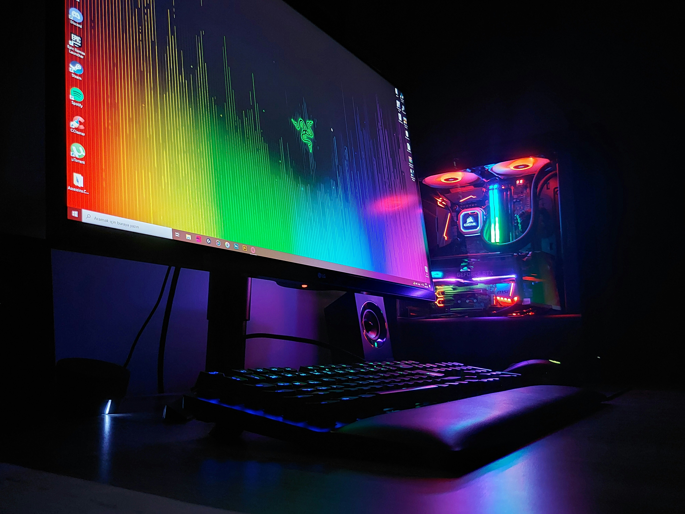

Born in Brooklyn, New York, to parents from Bangladesh, I have been fiddling with computers since a young age. Currently a junior scholar at Bedford Academy High School and the Brooklyn STEAM Center, I am learning Fullstack Development.
I like to use devices everyday, from iPhones, to iPads, to my Windows PC. I know a lot about computer hardware
Photography was a hobby I picked up about two years ago. Sometimes I like taking pictures with my camera.
I also like to travel. I love going places to explore and hang out in.